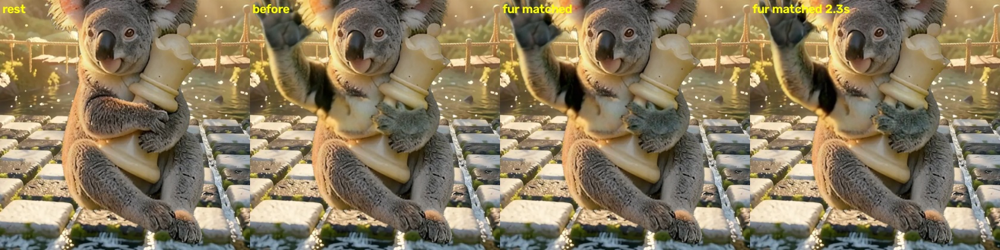

בדף הזה רק צופים. אפשר לכתוב לי מה דעתך, או לסמן בדף הביקורת במחשב.
לפתוח את המשחק עם הקואלה החדששימו לב: 1) השניות אחרי שהוא מסיים לדבר — חלק וטבעי, בלי "פריים אחרי פריים"? 2) נראה כמו הקואלה האמיתי? 3) הפה זז לפי המילים? המשפט: "הפרש קצת ביישן. בואו נסתכל." — אפשר לכתוב הערה מתחת לכל סרטון.
משמאל לימין: הקואלה במנוחה, היד מורמת לפני תיקון הצבע, ושני רגעים אחרי התיקון. מה שכבר עובד: היד באמת עוזבת את המלכה, ויש לו שתי ידיים בכל רגע. מה שעוד לא: הכפות שצוירו מחדש אפורות ורכות יותר מהתמונה, ויש כתם כהה על היד המורמת. לכן הנפנוף עוד לא נכנס למשחק.
